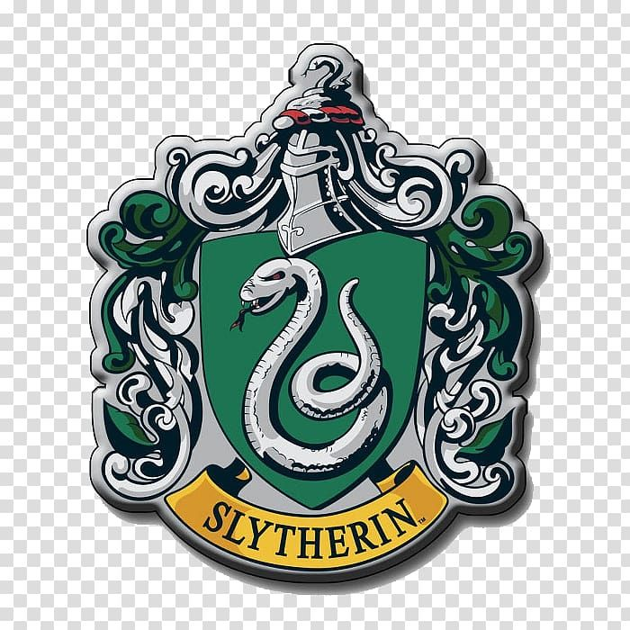
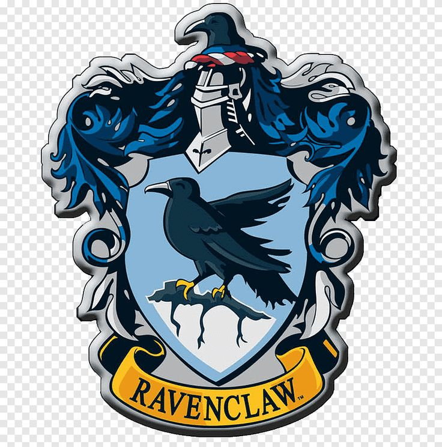
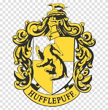

The Four Houses of Hogwarts
Hogwarts School of Witchcraft and Wizardry is divided into four houses, each representing different values and qualities. The Sorting Hat determines which house a student belongs to based on their personality.

Gryffindor
Founder: Godric Gryffindor
Colors: Scarlet and Gold
Animal: Lion
Values: Courage, bravery, nerve, and chivalry. Gryffindors are known for their daring nature and willingness to stand up for what is right, even in the face of danger.
Notable Traits: Gryffindors are often bold, loyal, and protective of their friends. They value honor and are quick to act in heroic ways.
Famous Members: Harry Potter, Ron Weasley, Hermione Granger, Albus Dumbledore, Sirius Black.

Slytherin
Founder: Salazar Slytherin
Colors: Green and Silver
Animal: Serpent
Values: Ambition, cunning, leadership, and resourcefulness. Slytherins are strategic thinkers who prioritize their goals and are willing to do what it takes to achieve them.
Notable Traits: Slytherins are often intelligent, determined, and self-preserving. They excel in leadership roles and are known for their wit and adaptability.
Famous Members: Severus Snape, Draco Malfoy, Tom Riddle (Voldemort), Bellatrix Lestrange, Lucius Malfoy.

Ravenclaw
Founder: Rowena Ravenclaw
Colors: Blue and Bronze
Animal: Eagle
Values: Intelligence, knowledge, creativity, and wit. Ravenclaws value learning and wisdom above all else, often pursuing academic excellence and innovative thinking.
Notable Traits: Ravenclaws are curious, analytical, and open-minded. They enjoy puzzles, riddles, and are often seen as eccentric or unconventional.
Famous Members: Luna Lovegood, Cho Chang, Filius Flitwick, Gilderoy Lockhart, Sybill Trelawney.

Hufflepuff
Founder: Helga Hufflepuff
Colors: Yellow and Black
Animal: Badger
Values: Loyalty, hard work, patience, and fair play. Hufflepuffs are dedicated, kind-hearted individuals who believe in equality and justice for all.
Notable Traits: Hufflepuffs are reliable, friendly, and inclusive. They are hardworking and value friendship and community above personal glory.
Famous Members: Cedric Diggory, Nymphadora Tonks, Pomona Sprout, Hannah Abbott, Ernie Macmillan.